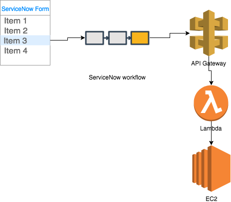

A lot of organizations are using ServiceNow to manage requests for creating new compute resources in the could ( i.e servers, lambda functions, containers …)
Usually, CMP tools like Scalr, or even ServiceNow Cloud Management can ( to a certain degree ) automate this process, but there are two major issues with these approaches :
1 – For these tools to be used properly they need lengthy customization to fit the business architecture of the organization, mapping all the business units, integrating with existing tools …
2 – It can be expensive, the price per node model can add up quickly for companies with a large number of servers deployed.
This a way to automate server build by using ServerNow Orchestration Module, and Serverless to build the integration.

Creating ServiceNow Form


ServiceNow workflow

to simplify the process I’ve only used a simple RunScript Step, other activities can be added like CMDB integration, approvals, notifications, etc …
here is a look at what the script does :
- Gets all the parameters from the form
- make an API call to API Gateway and Lambda
- Lambda will trigger
[code]
var os = current.variables.os;
var inst_size = current.variables.inst_size;
var request = new sn_ws.RESTMessageV2();
request.setEndpoint(‘https://9drnhpoorj.execute-api.us-east-1.amazonaws.com/dev/instance’);
request.setBasicAuth(“apikey1″,”mutKJWAolpsdfsdflksd8ndew02234LNFQQvq”);
request.setHttpMethod(‘POST’);
request.setRequestHeader(“Accept”, “application/json”);
request.setRequestHeader(‘Content-Type’, ‘application/json’);
request.setStringParameterNoEscape(‘os’,current.variables.os);
request.setStringParameterNoEscape(‘inst_size’,current.variables.inst_size);
request.setStringParameterNoEscape(‘volume_size’,current.variables.volume_size1);
request.setRequestHeader(‘Content-Type’, ‘application/json’);
request.setRequestBody(‘{“os”:”${os}”,”inst_size”:”${inst_size}”}’);
var response = request.execute();
[/code]
The AWS side
To build things on the AWS side, I used Serverless,
check out the code at the github repo
Demo
if I request an EC2 instance that’s an m1.small running an amazon linux OS

if I take a look at the AWS console I can see that the server is getting created :

With the right parameters :